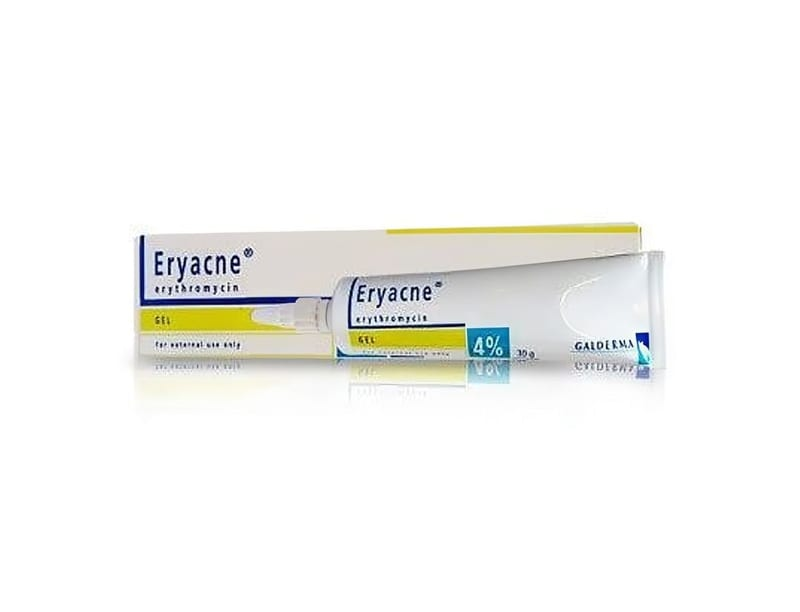

Eryacne %4 30 g Jel

Ne için kullanılır
KT · Bölüm 1ERYACNE
topikal akne ilaçları grubuna ait bir ilaçtır. ERYACNE
eritromisin adlı antibiyotik içermektedir.
Her kutuda bir adet 30 gr jel içeren alüminyum tüpte kullanıma sunulmaktadır. Haricen akne tedavisinde kullanılır.
2.ERYACNE ’yi kullanmadan önce dikkat edilmesi gerekenler ERYACNE’yi aşağıdaki durumlarda KULLANMAYINIZ Eritromisine, alkole veya ilacın herhangi bir bileşenine aşırı duyarlıysanız bu ilacı kullanmayınız.
ERYACNE’yi aşağıdaki durumlarda DİKKATLİ KULLANINIZ
Eğer; Birlikte kozmetik preparatlar ve/veya peeling kullanıyorsanız, Birlikte ağızdan veya damardan uygulanan antibiyotik kullanıyorsanız, Karaciğer hastalığınız var ise. Bu uyarılar, geçmişteki herhangi bir dönemde dahi olsa sizin için geçerliyse lütfen doktorunuza danışınız. ERYACNE’nin yiyecek ve içecek ile kullanılması ERYACNE haricen kullanıldığından yiyecek ve içecekle etkileşim beklenmez.
Hamilelik İlacı kullanmadan önce doktorunuza veya eczacınıza danışınız.
Hamilelerde yapılmış kontrollü çalışmalar bulunmamaktadır. Haricen uygulamadan sonra eritromisinin emilimi çok fazla değildir ancak emilen eritromisin embriyoya geçer. Gebeliğin ilk üç ayında bütün ilaçlarda olduğu gibi ERYACNE
tedavisi de kesilmelidir. Hamileliğin geri kalan dönemlerinde kullanımı yalnızca endikasyonun gerekliliği durumunda hekim kontrolü altında olmalıdır.
Tedaviniz sırasında hamile olduğunuzu fark ederseniz hemen doktorunuza veya eczacınıza danışınız.
Emzirme İlacı kullanmadan önce doktorunuza veya eczacınıza danışınız.
Haricen uygulamadan sonra eritromisinin emilimi çok fazla değildir ancak emilen eritromisin anne sütüne geçer. Emzirme sırasında kullanımı yalnızca endikasyonun gerekliliği durumunda hekim kontrolü altında olmalıdır.
Araç ve makine kullanımı ERYACNE’nin araç ve makine kullanma yeteneği üzerinde etkisi yoktur.
ERYACNE’nin içeriğinde bulunan bazı yardımcı maddeler hakkında önemli bilgiler ERYACNE’nin içeriğinde bulunan,
Bütil hidroksi tolüen lokal deri reaksiyonlarına (örneğin, kontak dermatite) ya da gözlerde ve mukoz membranlarda irritasyona sebebiyet verebilir. Diğer ilaçlar ile birlikte kullanımı Eş zamanlı olarak ağızdan veya damardan uygulanan antibiyotikler ile beraber kullanımında dikkatli olunmalı ve etkileşimlerin oluşabileceği akılda tutulmalıdır.
Eğer reçeteli ya da reçetesiz herhangi bir ilacı şu anda kullanıyorsanız veya son zamanlarda kullandınız ise lütfen doktorunuza veya eczacınıza bunlar hakkında bilgi veriniz.
3.ERYACNE
nasıl kullanılır?
Uygun kullanım ve doz / uygulama sıklığı için talimatlar: ERYACNE’yi
sabah-akşam olmak üzere günde iki kez kullanınız. Tedaviye dört hafta süresince devam edebilirsiniz. Ancak, bu süre, tatmin edici bir yanıt almak üzere uzatılabilir.
Uygulama yolu ve metodu: Cildinizi tamamen yıkadıktan ve iyice kuruladıktan sonra akneli alana uygulayınız. ERYACNE , yalnızca haricen kullanılır. Gözler, burun, ağız mukozası ve diğer mukozal yüzeyler ile temas etmemelidir.
Değişik yaş grupları: Çocuklarda kullanımı: Çocuklarda kullanımı ile ilgili bir bilgi bulunmamaktadır.
Yaşlılarda kullanımı: Yaşlılarda kullanımı ile ilgili bir bilgi bulunmamaktadır.
Özel kullanım durumları: Böbrek yetmezliğine ilişkin bir bilgi bulunmamaktadır. Karaciğer yetmezliği olan hastalarda dikkatli kullanılmalıdır.
Eğer ERYACNE’nin etkisinin çok güçlü veya zayıf olduğuna dair bir izleniminiz var ise, doktorunuz veya eczacınız ile konuşunuz.
Kullanmanız gerekenden fazla ERYACNE
kullandıysanız Bilinen bir doz aşımı bilgisi yoktur.
ERYACNE’den kullanmanız gerekenden fazlasını kullanmışsanız, bir doktor veya eczacı ile konuşunuz.
ERYACNE’yi kullanmayı unutursanız Unutulan dozları dengelemek için çift doz almayınız.
ERYACNE
ile tedavi sonlandırıldığındaki oluşabilecek etkiler Özel bir etki beklenmemektedir .
3. Olası yan etkiler nelerdir? Tüm ilaçlar gibi, ERYACNE’nin içeriğinde bulunan maddelere duyarlı olan kişilerde yan etkiler olabilir.
Çok yaygın : 10 hastanın en az birinde görülebilir. Yaygın : 10 hastanın birinden az, fakat 100 hastanın birinden fazla görülebilir. Yaygın olmayan: 100 hastanın birinden az, fakat 1.000 hastanın birinden fazla görülebilir. Seyrek : 1.000 hastanın birinden az görülebilir. Çok seyrek : 10.000 hastanın birinden az görülebilir. Bilinmiyor : Eldeki verilerden hareketle tahmin edilemiyor.
Çok seyrek : Aşırı duyarlılık yanıtları
Yaygın olmayan: Kızarıklık, kepeklenme, kaşıntı, cilt kuruması ve takiben yağlanma, ağrı
Bu yan etkiler jelde bulunan alkole bağlıdır. Bu yan etkilerin görülmesi durumunda mümkünse kullanım sıklığı azaltılır. Bunlar ERYACNE’nin hafif yan etkileridir.
Yan etkilerin raporlanması Kullanma Talimatında yer alan veya almayan herhangi bir yan etki meydana gelmesi durumunda hekiminiz, eczacınız veya hemşireniz ile konuşunuz. Ayrıca karşılaştığınız yan etkileri www.titck.gov.tr sitesinde yer alan “İlaç Etki Bildirimi” ikonunu tıklayarak ya da 0 800 314 00 08 numaralı yan etki bildirim hattını arayarak Türkiye Farmakovijilans Merkezi (TÜFAM)‘ne bildiriniz. Meydana gelen yan etkileri bildirerek kullanmakta olduğunuz ilacın güvenliği hakkında daha fazla bilgi edinilmesine katkı sağlamış olacaksınız.
Eğer bu kullanma talimatında bahsi geçmeyen herhangi bir yan etki ile karşılaşırsanız doktorunuzu veya eczacınızı bilgilendiriniz.